Tân cổ điển — Versailles
Tổng mặt bằng
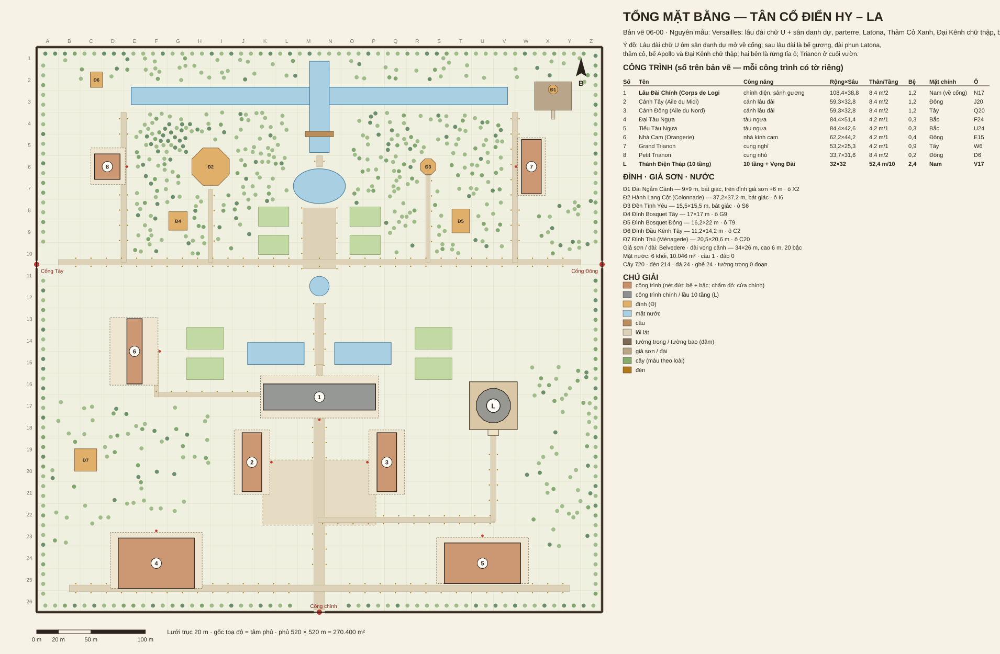
Thánh Điện Tháp (lầu 10 tầng)
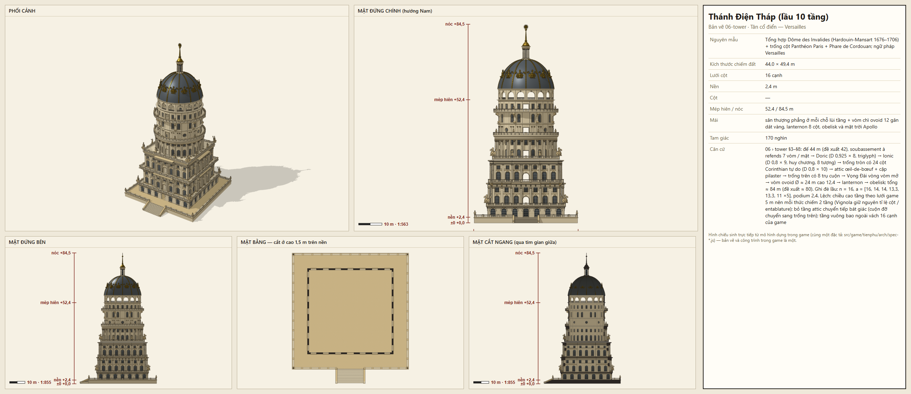
Lâu Đài Chính (Corps de Logis)
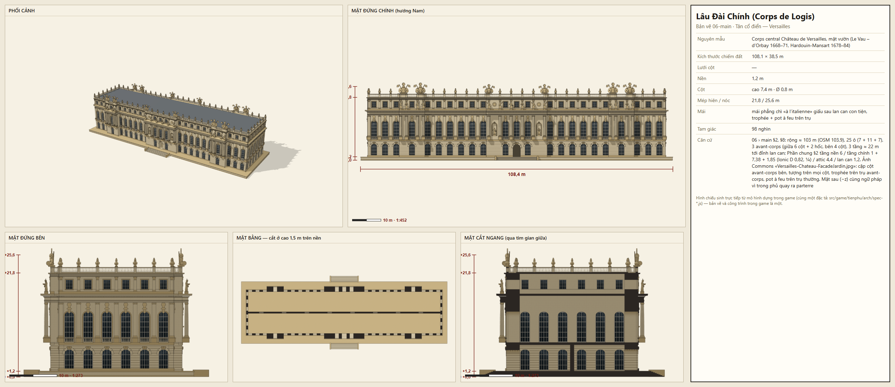
Cánh Tây (Aile du Midi)
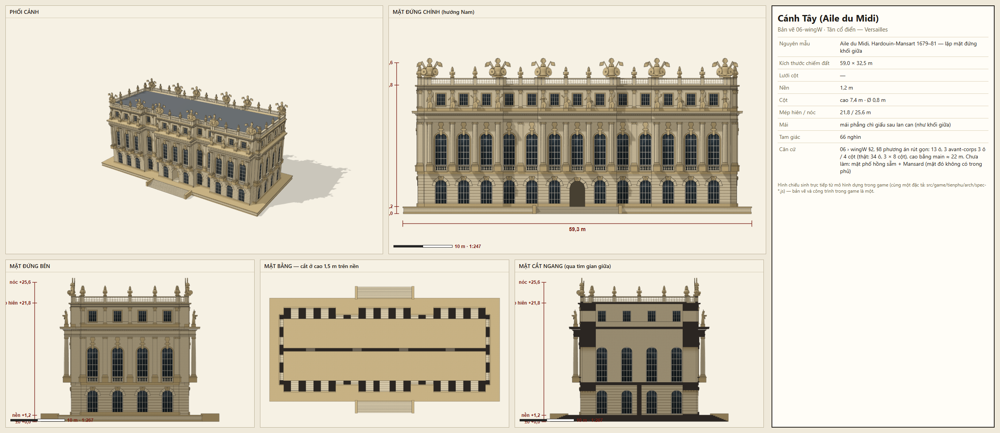
Cánh Đông (Aile du Nord)
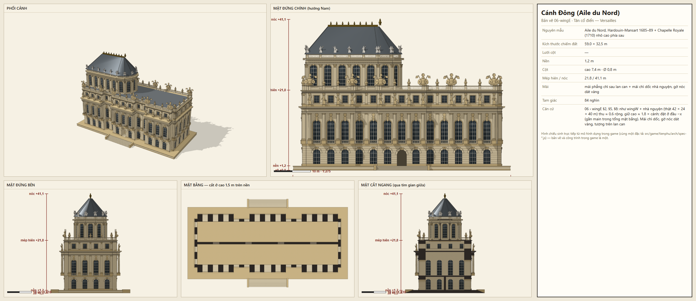
Đại Tàu Ngựa (Grande Écurie)
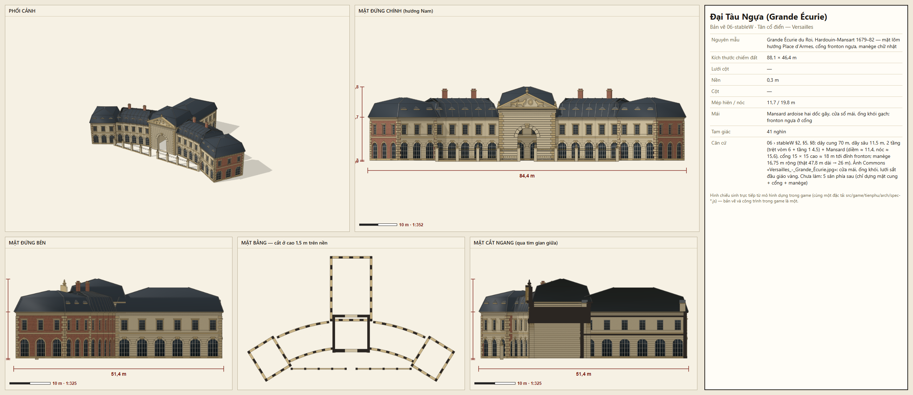
Tiểu Tàu Ngựa (Petite Écurie)
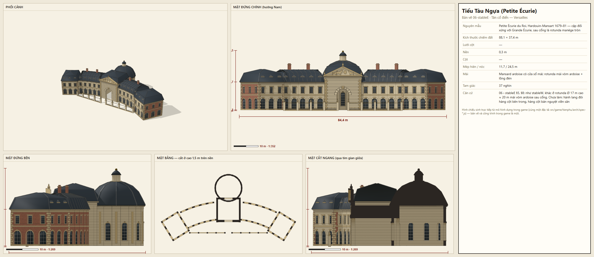
Nhà Cam (Orangerie)
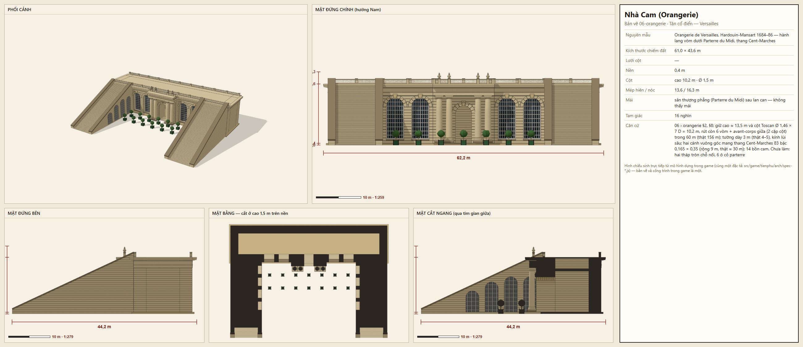
Grand Trianon (Trianon de marbre)
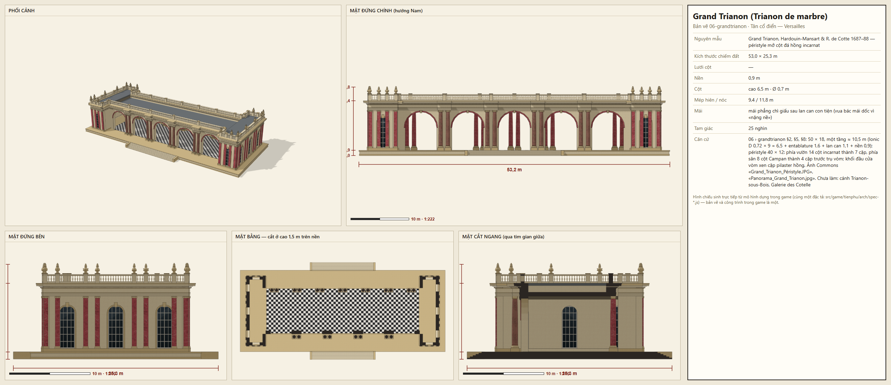
Petit Trianon
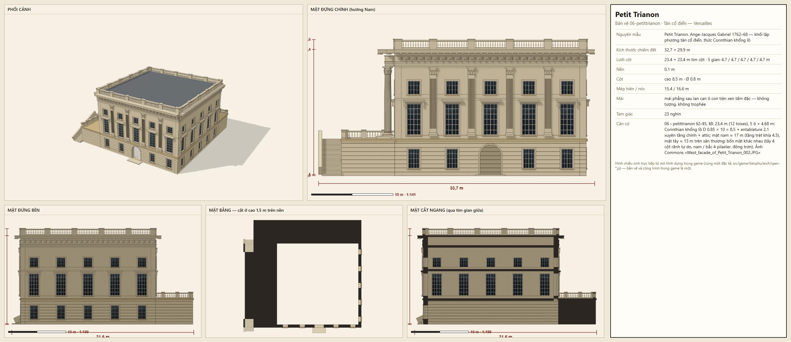
Đài Ngắm Cảnh (Belvédère)
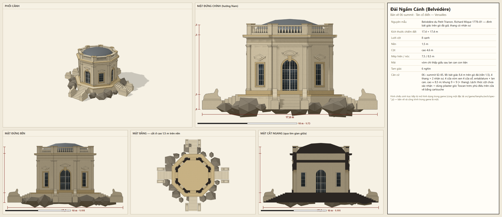
Hành Lang Cột (Colonnade)
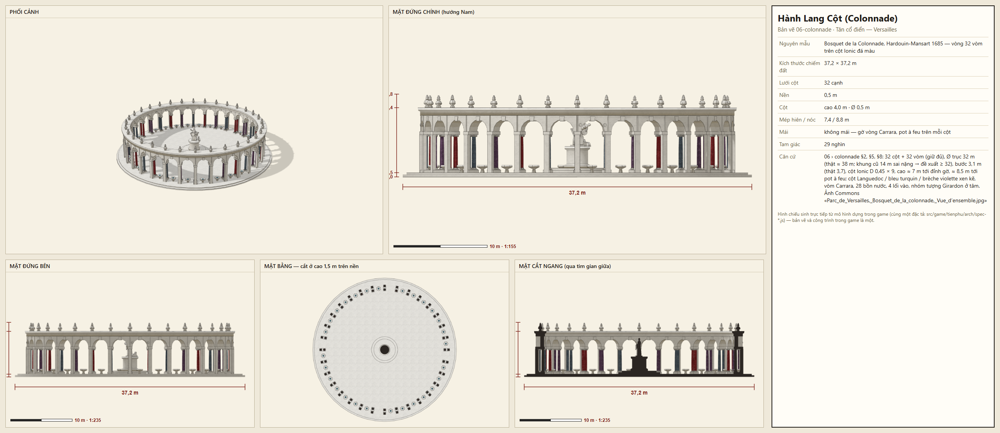
Đền Tình Yêu (Temple de l’Amour)
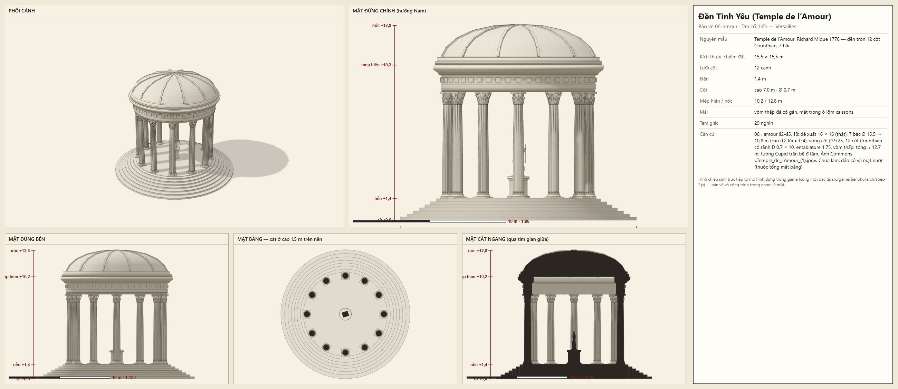
Đình Bosquet Tây (Pavillon Français)
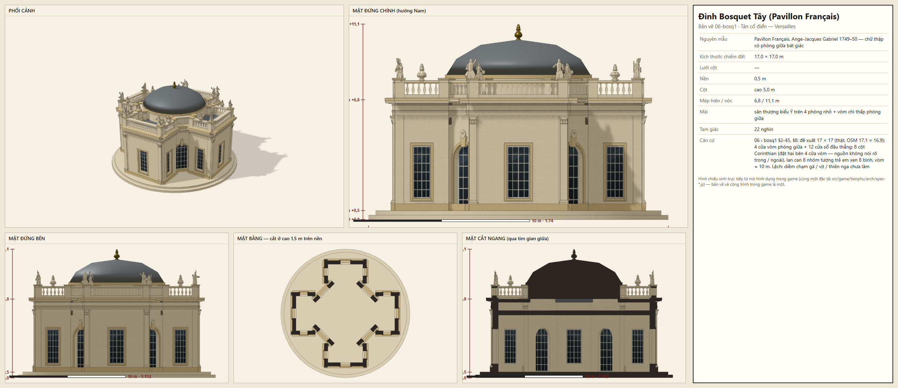
Đình Bosquet Đông (Pavillon Frais)
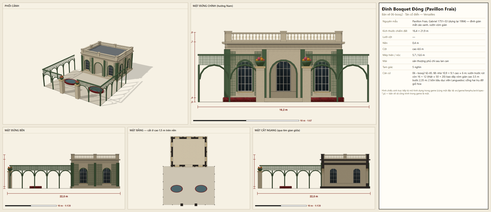
Đình Đầu Kênh Tây
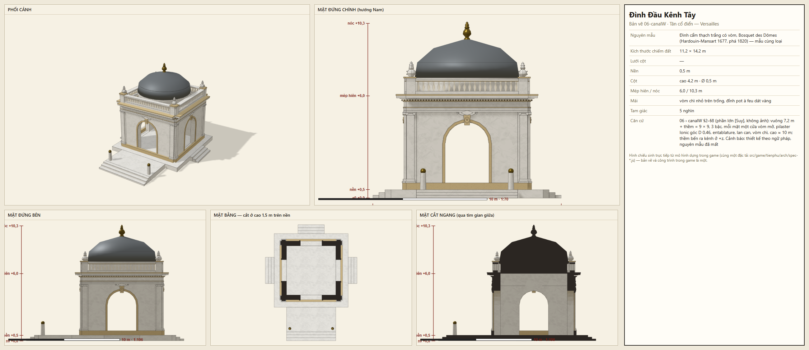
Đình Thú (Ménagerie)
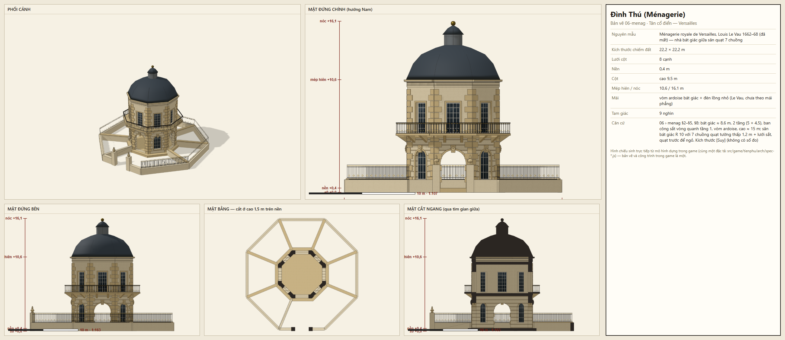